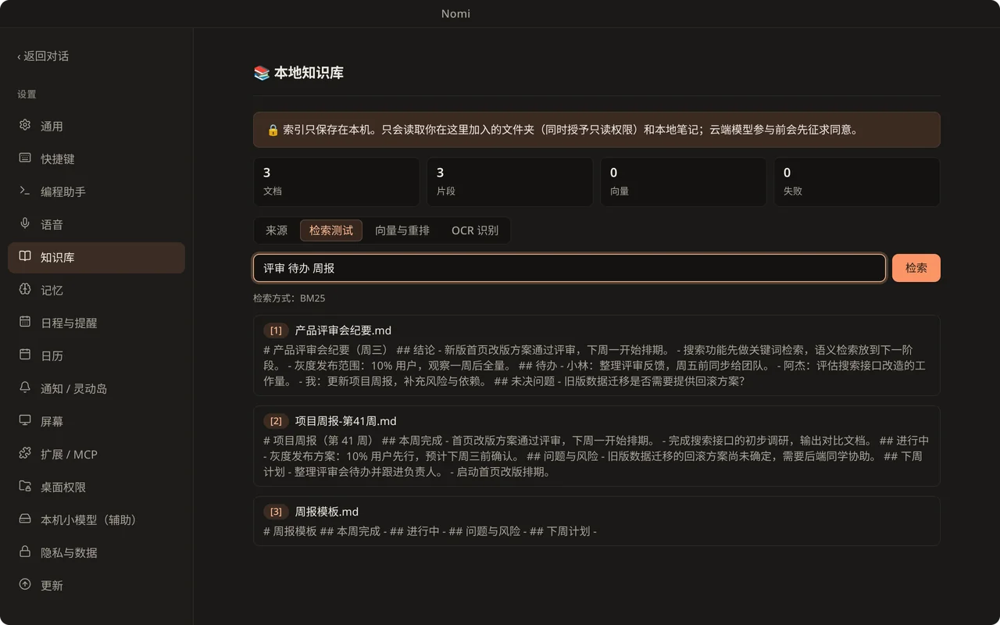
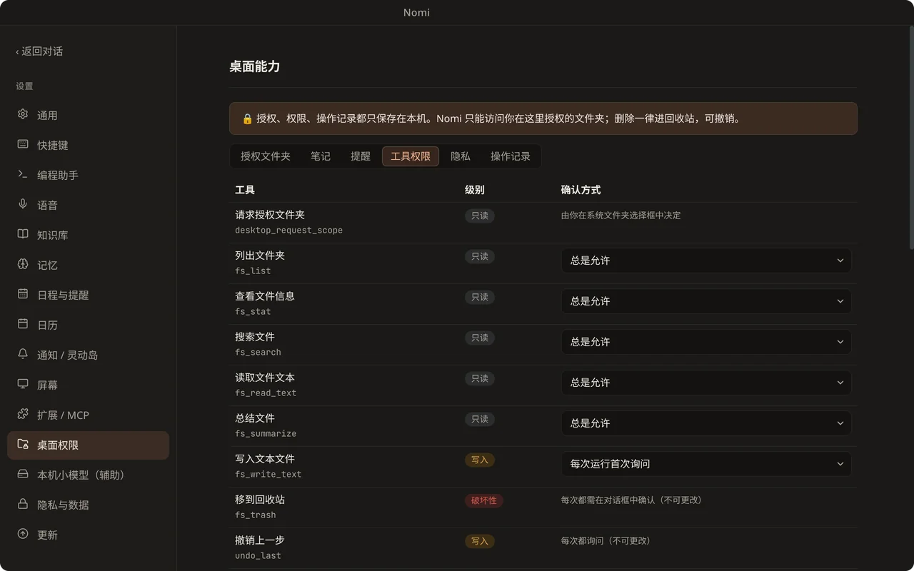

桌面伙伴与语音
- 会眨眼、会呼吸，口型随语音同步。
- 摸头、点击各有反应，可导入 VRM 换形象。
- 本地离线语音输入，或接入自己的 TTS。

对话与屏幕问答
- 流式对话，会话与侧栏清爽不打扰。
- Ctrl/⌘+Alt+A 框选屏幕，直接带图提问。
- 可选屏幕记忆（默认关闭），本机识别文字。

知识库与长期记忆
- 基于你的文件夹与笔记回答，引用可点击。
- 支持 PDF、Word、Markdown，图片文字本地 OCR。
- 记忆与个人档案，可看、可改、可删。

自动化与 MCP
- 授权后读取、搜索、总结本机文件。
- 图形界面管理 MCP 服务器与 SKILL.md 技能包。
- 敏感操作先确认，删除可撤销，全程有审计日志。

本地优先，模型自由
- OpenAI、Anthropic、Gemini、DeepSeek、Ollama 等一键切换。
- 可完全离线：本机小模型，或「仅本地模型」。
- 数据留在本机，API Key 加密保存。